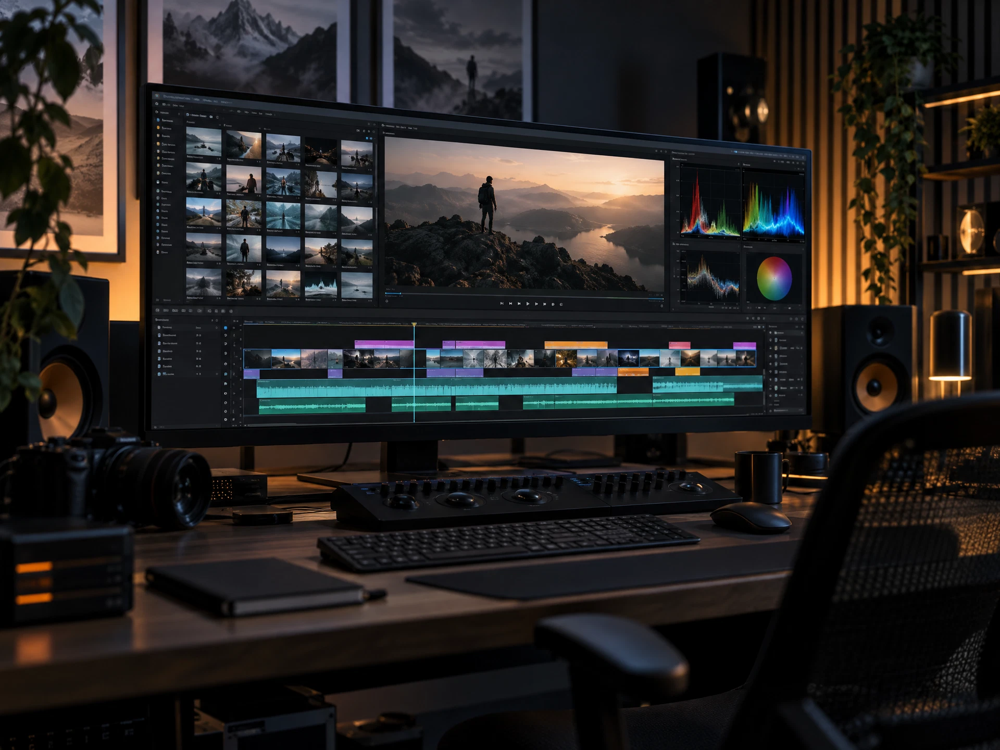

Decision trail
You know why the direction works, not just what it looks like.
Ashish Manocha studio
A focused way of working that keeps the ideas sharp and the momentum real.
How we work
A simple process keeps the work sharp, collaborative, and moving from first spark to final publish.
We clarify the audience, the opportunity, and the one message that matters most.
We shape the concept, system, and visuals until the idea feels impossible to ignore.
We polish the details, launch with confidence, and leave you with a repeatable playbook.

The playbook
Clarity is not a meeting. It is a sequence of small decisions that keep the work moving without losing the spark.
What stays with you
You know why the direction works, not just what it looks like.
You get templates, rules, and assets that make the next move faster.
Your team can pick up the work and keep the quality consistent.